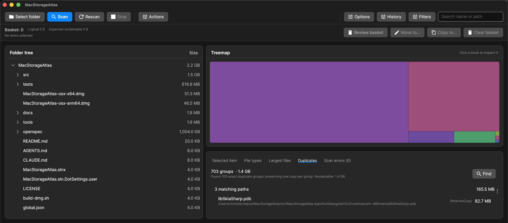
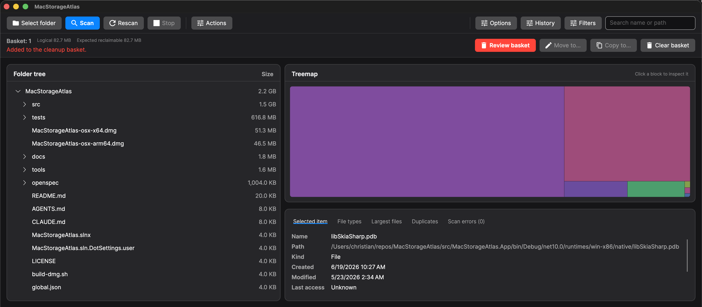

MacStorageAtlas is a native disk usage analyzer for macOS — a free WinDirStat, DaisyDisk, and GrandPerspective alternative for Apple Silicon and Intel Macs. Wondering what is using my disk space on Mac? Scan any folder or volume and see the results as a sortable folder tree and an interactive treemap, so you can find the space hogs and free up gigabytes in seconds.

WinDirStat for Mac alternative
MacStorageAtlas brings the familiar idea of a disk usage tree and treemap to macOS. If you used WinDirStat to find large folders, file types, and files taking up space, MacStorageAtlas provides the same practical storage-analysis workflow in a native Mac app for Apple Silicon and Intel Macs.
DaisyDisk alternative
DaisyDisk is polished and commercial; MacStorageAtlas is free and open source. It focuses on transparent scan results, sortable tables, exact duplicate review, local-only metadata, and recoverable cleanup through macOS Trash or an external archive location.
Find large files on macOS
Use MacStorageAtlas to scan a home folder, external drive, project folder, or full volume, then sort by size, inspect the largest files, compare file types, and preview selected items with Quick Look before deciding what to archive or move to Trash.
Features
🗺️ Tree + treemap
Two synchronized views: a folder tree sorted by size and a proportional treemap where the biggest blocks are the biggest consumers.
⚡ Live progress
Async scanning streams paths, file/folder counts, and bytes as it runs. Hundreds of thousands of files stay responsive — cancel anytime.
📊 By file type & largest files
Dedicated tabs for which file types take the most room and the single biggest files on disk, with counts and full paths.
🧩 Exact duplicates
Run opt-in duplicate analysis after a scan. It reads local file contents only after metadata and sample checks, confirms byte-for-byte matches, skips known cloud-only placeholders, and keeps hardlinks out of reclaimable totals.
🧾 File metadata
Selected-item details show scan-time kind and available created or modified dates, with unavailable dates shown as unknown.
🔎 Quick Look
Preview the selected file or folder with native macOS Quick Look from the toolbar or its Actions menu, and use Space or Command-I shortcuts for inspection.
🎛️ Advanced filters
Narrow a completed scan by size, dates, extension, file category, and shared storage, with built-in and saved presets. Date bounds can be a fixed date or a span before now, so a saved preset keeps meaning the same span instead of drifting. The treemap keeps its full layout and highlights matches, so proportions stay honest.
📤 CSV & JSON export
Write the current result to a file you choose. With a filter active only the matched files are exported. JSON keeps paths exact and lists unreadable paths; CSV is spreadsheet-ready and neutralizes leading formula characters. A cancelled export leaves no partial file.
🕓 Local scan history
Optionally record completed scans so a later release can show what grew or shrank. Off until you turn it on. Snapshots stay on your Mac, never include file contents, and are capped by count and total size. Delete one recorded scan or clear the whole history whenever you like.
🔐 Full Disk Access guidance
When macOS-protected locations make a scan appear incomplete, MacStorageAtlas shows the inaccessible path count, keeps detailed errors visible, opens Privacy & Security when possible, and lets you rescan after granting access.
🧹 Safe cleanup
Reveal any item in Finder, move eligible items to Trash, or collect multiple scanned items in a cleanup basket for final review. Broad or sensitive containers are blocked in app, approved cleanup items go to macOS Trash, and partial failures stay visible.
📦 Archive instead of delete
Move or copy the reviewed cleanup basket to an external or network volume. The review names the operation and destination, colliding names are blocked instead of overwritten, and a cross-volume move removes the original only after the copy is verified.
☁️ Shared-aware on-disk size
Measures local allocation, counts hardlinks once, and counts verified full-clone data once where the volume capability permits. Divergent clone extents remain per file.
⚙️ Configurable scanning
Choose shared-aware, per-path allocated, or logical size, and toggle hidden files, symbolic links, and .app bundle expansion.
📈 Reproducible scan benchmarks
Developer tooling records scan duration, throughput, progress updates, memory, errors, runtime, architecture, and fixture metadata for repeatable performance checks.
How it compares
| MacStorageAtlas | DaisyDisk | GrandPerspective | WinDirStat | |
|---|---|---|---|---|
| Platform | macOS (arm64 + x64) | macOS | macOS | Windows |
| Price | Free & open source | $9.99 one-time | Free SourceForge build; $2.99 App Store build | Free & open source |
| Primary visual map | Rectangular treemap | Sunburst map | Rectangular treemap | Rectangular treemap |
| Folder tree | ✅ | Sidebar list | — | ✅ |
| File-type breakdown | ✅ | — | Coloring and filters | ✅ |
| Allocated or physical-size support | ✅ | ✅ | ✅ | ✅ |
| Hardlinks counted once | ✅ | ✅ | ✅ | ✅ |
Comparison last verified against first-party sources on 2026-08-19. These tools do not use one interchangeable definition of physical, allocated, or reclaimable size.
Live progress on huge volumes
Scanning is fully async and streams the current path, file and folder counts, and bytes scanned as it runs — hundreds of thousands of files stay responsive, and a single click cancels while partial results stay visible.

Answer the two questions that matter
The same scan, two tabs: which kinds of files take up the most room? and what are the single biggest files on disk? — each with counts, sizes, and full paths.


Review duplicates deliberately
Exact duplicate analysis is opt-in after a scan. It narrows candidates before reading full contents, confirms byte-for-byte equality, reports skipped files, and sends selected duplicate entries through the same Quick Look, Finder reveal, and cleanup-basket review workflow.

Keep cleanup recoverable
Collect scanned items in a basket before acting. MacStorageAtlas blocks broad or sensitive containers, shows the logical and expected reclaimable totals, and can move approved items to Trash or move/copy them to another location without replacing destination files.

FAQ
What is using my disk space on Mac?
Run a scan in MacStorageAtlas and inspect the synchronized folder tree, treemap, file-type breakdown, and largest-files tab to see which folders and files consume the most space.
Is MacStorageAtlas free?
Yes. MacStorageAtlas is free and open source under the MIT License, with signed and notarized macOS DMGs published on GitHub Releases.
Does it work on Apple Silicon and Intel Macs?
Yes. The release provides separate macOS builds for arm64 Apple Silicon and x64 Intel Macs.
Can it find duplicate files?
Yes. Duplicate review is opt-in after a scan and confirms exact byte-for-byte matches before showing reclaimable duplicate groups.